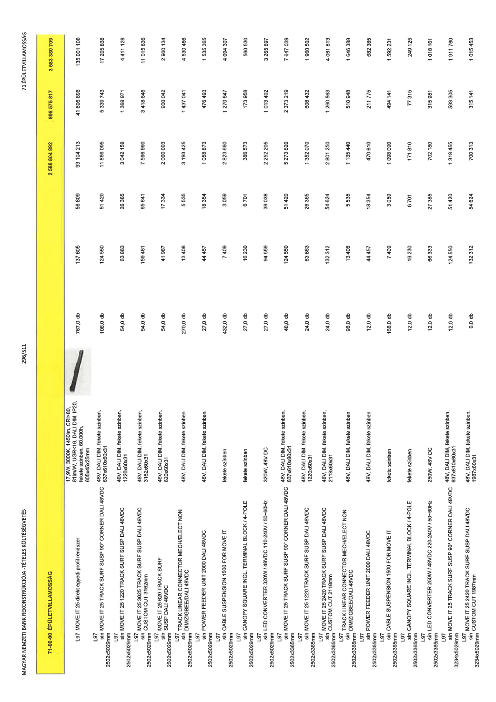

| Tétel | Menny. | Egys. | Anyag e.ár (net HUF) | Díj e.ár (net HUF) | Anyag összesen (net HUF) | Díj összesen (net HUF) | Anyag+Díj összesen (net HUF) |
|---|---|---|---|---|---|---|---|
| 71-00-00 ÉPÜLETVILLAMOSSÁG | NaN | NaN | 0 | 0 | 2 586 804 892 | 996 575 817 | 3 583 380 709 |
| 17,9W, 3000K, 1450lm, CRI>80, 81lm/W, UGR<16, DALI DIM, IP20, fekete színben, 60.000h, 605x45x25mm | 0 | 0 | 0 | 0 | 0 | 0 | 0 |
| L97 MOVE IT 25 direkt egyedi profil rendszer | 767,0 | db | 137 605 | 56 809 | 93 104 213 | 41 896 896 | 135 001 108 |
| 48V, DALI DIM, fekete színben, 637x610x60x31 | 0 | 0 | 0 | 0 | 0 | 0 | 0 |
| L97 sín MOVE IT 25 TRACK SURF SUSP 90° CORNER DALI 48VDC 2502x5029mm | 108,0 | db | 124 550 | 51 420 | 11 866 095 | 5 339 743 | 17 205 838 |
| 48V, DALI DIM, fekete színben, 1220x60x31 | 0 | 0 | 0 | 0 | 0 | 0 | 0 |
| L97 sín MOVE IT 25 1220 TRACK SURF SUSP DALI 48VDC 2502x5029mm | 54,0 | db | 63 863 | 26 365 | 3 042 158 | 1 368 971 | 4 411 128 |
| 48V, DALI DIM, fekete színben, 3162x60x31 | 0 | 0 | 0 | 0 | 0 | 0 | 0 |
| L97 sín MOVE IT 25 3625 TRACK SURF SUSP DALI 48VDC CUSTOM CUT 3162mm 2502x5029mm | 54,0 | db | 159 481 | 65 841 | 7 596 990 | 3 418 646 | 11 015 636 |
| 48V, DALI DIM, fekete színben, 620x60x31 | 0 | 0 | 0 | 0 | 0 | 0 | 0 |
| L97 sín MOVE IT 25 620 TRACK SURF SUSP DALI 48VDC 2502x5029mm | 54,0 | db | 41 987 | 17 334 | 2 000 093 | 900 042 | 2 900 134 |
| 48V, DALI DIM, fekete színben | 0 | 0 | 0 | 0 | 0 | 0 | 0 |
| L97 sín TRACK LINEAR CONNECTOR MECH/ELECT NON DIM/ZIGBEE/DALI 48VDC 2502x5029mm | 270,0 | db | 13 408 | 5 535 | 3 193 425 | 1 437 041 | 4 630 466 |
| 48V, DALI DIM, fekete színben | 0 | 0 | 0 | 0 | 0 | 0 | 0 |
| L97 sín POWER FEEDER UNIT 2000 DALI 48VDC 2502x5029mm | 27,0 | db | 44 457 | 18 354 | 1 058 873 | 476 493 | 1 535 365 |
| fekete színben | 0 | 0 | 0 | 0 | 0 | 0 | 0 |
| L97 sín CABLE SUSPENSION 1500 FOR MOVE IT 2502x5029mm | 432,0 | db | 7 409 | 3 059 | 2 823 660 | 1 270 647 | 4 094 307 |
| fekete színben | 0 | 0 | 0 | 0 | 0 | 0 | 0 |
| L97 sín CANOPY SQUARE INCL TERMINAL BLOCK / 4-POLE 2502x5029mm | 27,0 | db | 16 230 | 6 701 | 386 573 | 173 958 | 560 530 |
| 320W, 48V DC | 0 | 0 | 0 | 0 | 0 | 0 | 0 |
| L97 sín LED CONVERTER 320W / 48VDC 110-240V / 50-60Hz 2502x5029mm | 27,0 | db | 94 559 | 39 038 | 2 252 205 | 1 013 492 | 3 265 697 |
| 48V, DALI DIM, fekete színben, 637x610x60x31 | 0 | 0 | 0 | 0 | 0 | 0 | 0 |
| L97 sín MOVE IT 25 TRACK SURF SUSP 90° CORNER DALI 48VDC 2502x3365mm | 48,0 | db | 124 550 | 51 420 | 5 273 820 | 2 373 219 | 7 647 039 |
| 48V, DALI DIM, fekete színben, 1220x60x31 | 0 | 0 | 0 | 0 | 0 | 0 | 0 |
| L97 sín MOVE IT 25 1220 TRACK SURF SUSP DALI 48VDC 2502x3365mm | 24,0 | db | 63 863 | 26 365 | 1 352 070 | 608 432 | 1 960 502 |
| 48V, DALI DIM, fekete színben, 2118x60x31 | 0 | 0 | 0 | 0 | 0 | 0 | 0 |
| L97 sín MOVE IT 25 2420 TRACK SURF SUSP DALI 48VDC CUSTOM CUT 2118mm 2502x3365mm | 24,0 | db | 132 312 | 54 624 | 2 801 250 | 1 260 563 | 4 061 813 |
| 48V, DALI DIM, fekete színben | 0 | 0 | 0 | 0 | 0 | 0 | 0 |
| L97 sín TRACK LINEAR CONNECTOR MECH/ELECT NON DIM/ZIGBEE/DALI 48VDC 2502x3365mm | 96,0 | db | 13 408 | 5 535 | 1 135 440 | 510 948 | 1 646 388 |
| 48V, DALI DIM, fekete színben | 0 | 0 | 0 | 0 | 0 | 0 | 0 |
| L97 sín POWER FEEDER UNIT 2000 DALI 48VDC 2502x3365mm | 12,0 | db | 44 457 | 18 354 | 470 610 | 211 775 | 682 385 |
| fekete színben | 0 | 0 | 0 | 0 | 0 | 0 | 0 |
| L97 sín CABLE SUSPENSION 1500 FOR MOVE IT 2502x3365mm | 168,0 | db | 7 409 | 3 059 | 1 098 090 | 494 141 | 1 592 231 |
| fekete színben | 0 | 0 | 0 | 0 | 0 | 0 | 0 |
| L97 sín CANOPY SQUARE INCL TERMINAL BLOCK / 4-POLE 2502x3365mm | 12,0 | db | 16 230 | 6 701 | 171 810 | 77 315 | 249 125 |
| 250W, 48V DC | 0 | 0 | 0 | 0 | 0 | 0 | 0 |
| L97 sín LED CONVERTER 250W / 48VDC 220-240V / 50-60Hz 2502x3365mm | 12,0 | db | 66 333 | 27 385 | 702 180 | 315 981 | 1 018 161 |
| 48V, DALI DIM, fekete színben, 637x610x60x31 | 0 | 0 | 0 | 0 | 0 | 0 | 0 |
| L97 sín MOVE IT 25 TRACK SURF SUSP 90° CORNER DALI 48VDC 3234x5029mm | 12,0 | db | 124 550 | 51 420 | 1 318 455 | 593 305 | 1 911 760 |
| 48V, DALI DIM, fekete színben, 1987x60x31 | 0 | 0 | 0 | 0 | 0 | 0 | 0 |
| L97 sín MOVE IT 25 2420 TRACK SURF SUSP DALI 48VDC CUSTOM CUT 1987mm 3234x5029mm | 6,0 | db | 132 312 | 54 624 | 700 313 | 315 141 | 1 015 453 |
